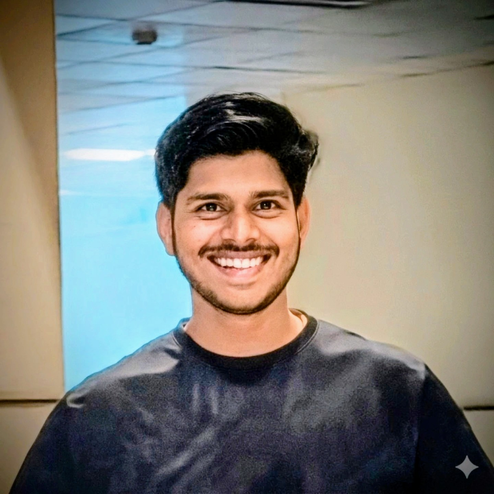

I am a Computer Science & Engineering student passionate about software engineering, secure systems, and core technical research. My toolkit is built around Python and C, combined with web technologies like HTML and JavaScript.
I am deeply fascinated by steganography and data security—specifically the logic behind covert communication. Whether it involves low-level optimization, designing algorithms, or building automation scripts, I thrive on precise, analytical problem-solving. My long-term professional ambition is to serve as an R&D research scientist, contributing to innovation within national defense.
To engineer next-generation software tools by leveraging AI architectures and decentralized framework protocols. Focused entirely on developing global solutions that make structural digital information highly reliable, fast, and cryptographically secure.
For open-source research peer collaborations, technology briefs, or algorithmic system consultation: